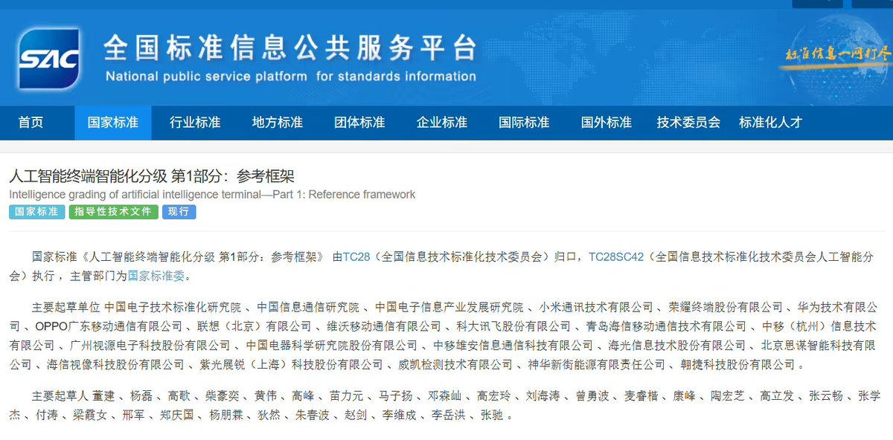
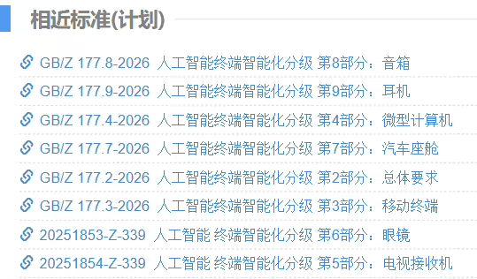
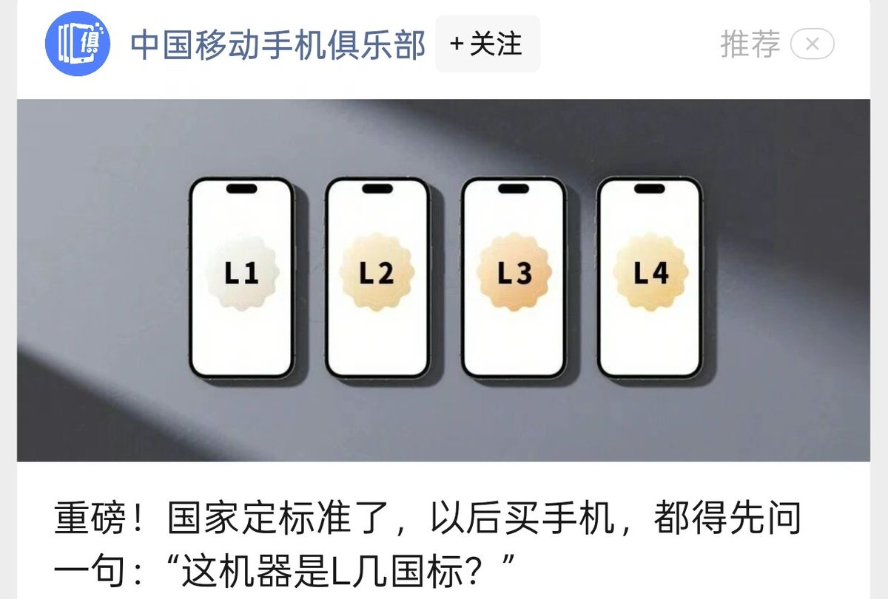
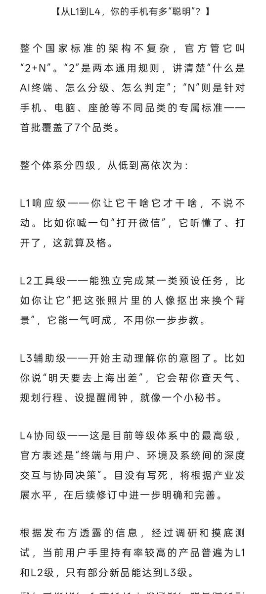
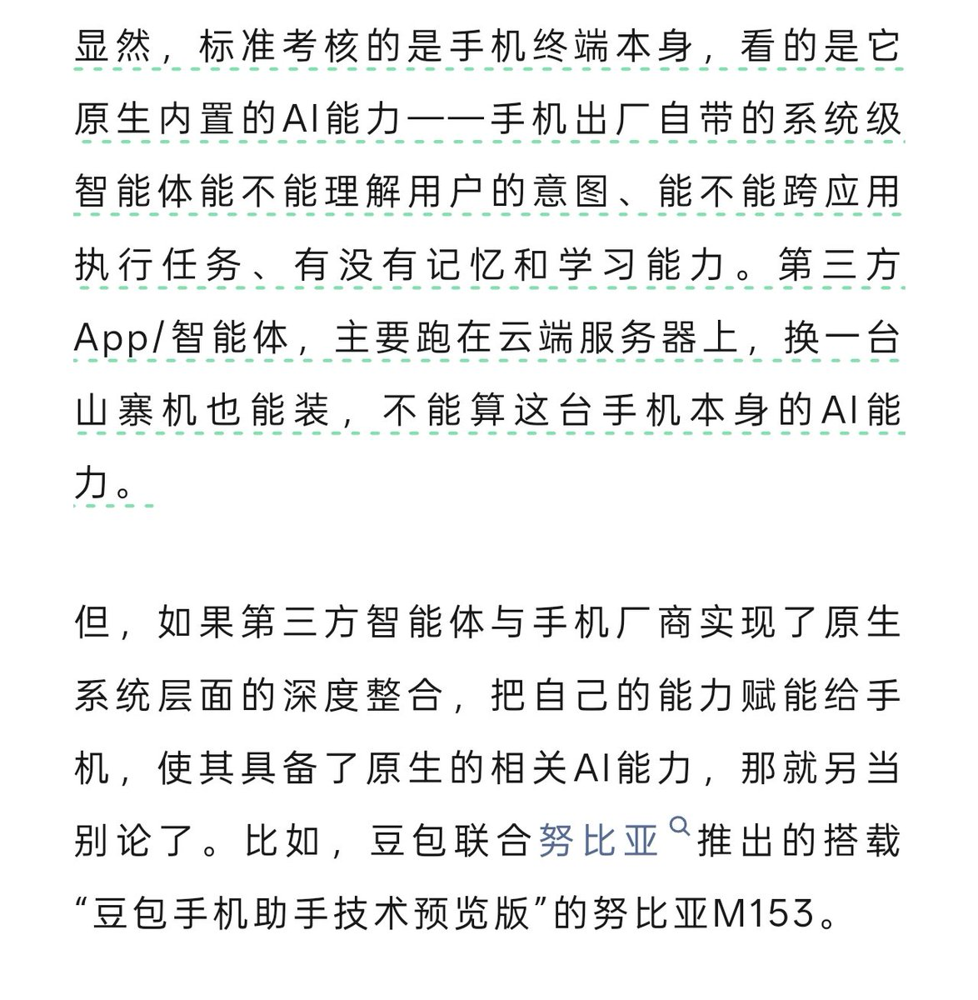
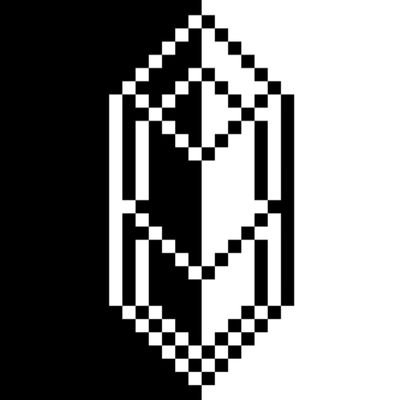

奶昔🥤
@realNyarime
《人工智能终端智能化分级》（GB/Z 177—2026）系列国家标准的主要起草单位涵盖华为、荣耀、小米、OPPO、vivo、联想、紫光展锐等头部企业
《标准》采用“2+N”架构：“2”指《第 1 部分：参考框架》和《第 2 部分：总体要求》。“N”是面向手机、电脑、电视、眼镜、汽车座舱、音箱、耳机等不同产品的具体标准
首批标准包括 7 个品类，后续将推进其他品类标准研制，不过这份文件的约束力较弱，厂商可选择不遵循，其意义类似自动驾驶分级标准






水晶クリスタル
@suishoucrystal
工信部、市监局、商务部将根据手机的智能程度划分等级，等级为L1至L4
并且文章中特别提到了努比亚的豆包手机 https://t.co/TprNOO2ufp